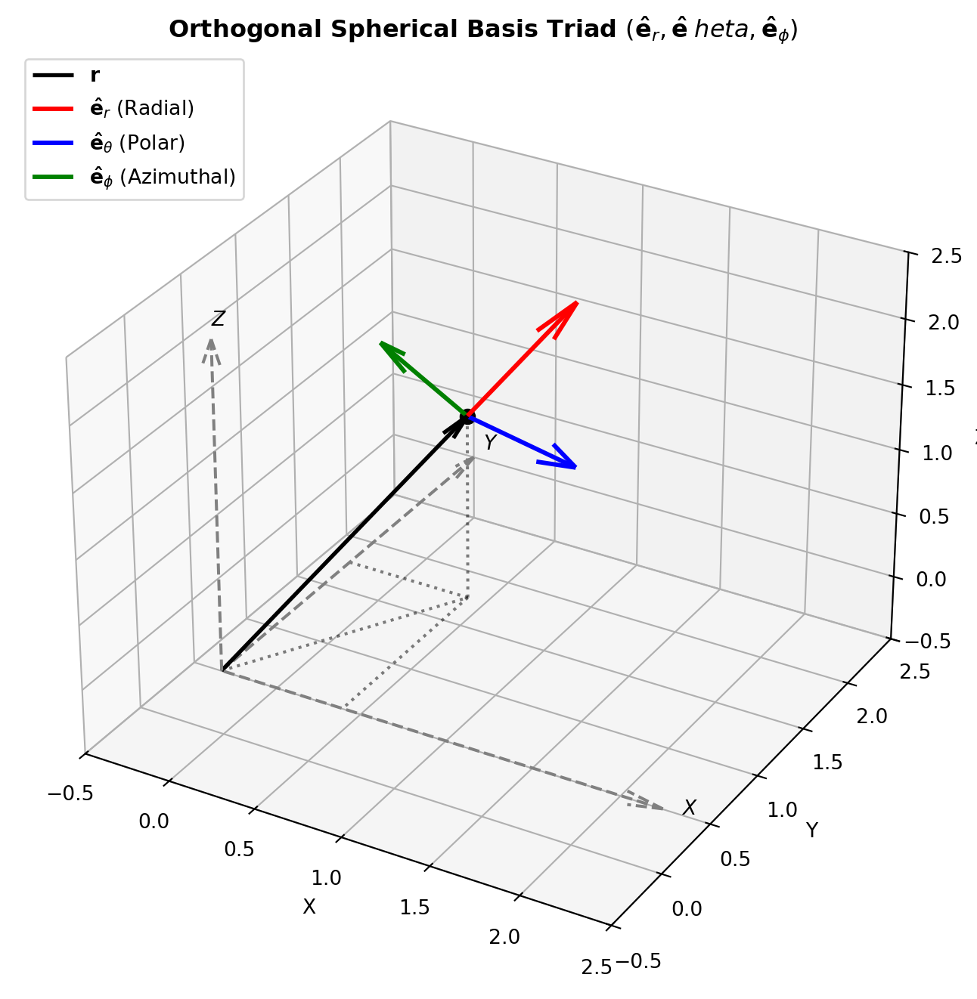

Code
import numpy as np
import matplotlib.pyplot as plt
r_val = 2.0
theta_val = np.radians(45.0) # 45 deg colatitude
phi_val = np.radians(60.0) # 60 deg azimuth
# Point position in Cartesian coordinates
x = r_val * np.sin(theta_val) * np.cos(phi_val)
y = r_val * np.sin(theta_val) * np.sin(phi_val)
z = r_val * np.cos(theta_val)
# Basis vectors in Cartesian coordinates
# e_r = sin(theta)cos(phi) i + sin(theta)sin(phi) j + cos(theta) k
e_r = np.array([np.sin(theta_val)*np.cos(phi_val), np.sin(theta_val)*np.sin(phi_val), np.cos(theta_val)])
# e_theta = cos(theta)cos(phi) i + cos(theta)sin(phi) j - sin(theta) k
e_theta = np.array([np.cos(theta_val)*np.cos(phi_val), np.cos(theta_val)*np.sin(phi_val), -np.sin(theta_val)])
# e_phi = -sin(phi) i + cos(phi) j + 0 k
e_phi = np.array([-np.sin(phi_val), np.cos(phi_val), 0.0])
fig = plt.figure(figsize=(8, 7))
ax = fig.add_subplot(111, projection='3d')
# Draw coordinate axes
axis_len = 2.5
ax.quiver(0, 0, 0, axis_len, 0, 0, color='gray', linestyle='--', arrow_length_ratio=0.08)
ax.quiver(0, 0, 0, 0, axis_len, 0, color='gray', linestyle='--', arrow_length_ratio=0.08)
ax.quiver(0, 0, 0, 0, 0, axis_len, color='gray', linestyle='--', arrow_length_ratio=0.08)
ax.text(axis_len+0.1, 0, 0, '$X$', fontweight='bold')
ax.text(0, axis_len+0.1, 0, '$Y$', fontweight='bold')
ax.text(0, 0, axis_len+0.1, '$Z$', fontweight='bold')
# Position vector
ax.quiver(0, 0, 0, x, y, z, color='black', lw=2, arrow_length_ratio=0.08, label=r'$\mathbf{r}$')
ax.scatter([x], [y], [z], color='black', s=50)
# Local basis triad (scaled for visibility)
scale = 0.9
ax.quiver(x, y, z, scale*e_r[0], scale*e_r[1], scale*e_r[2], color='red', lw=2.2, label=r'$\mathbf{\hat{e}}_r$ (Radial)')
ax.quiver(x, y, z, scale*e_theta[0], scale*e_theta[1], scale*e_theta[2], color='blue', lw=2.2, label=r'$\mathbf{\hat{e}}_\theta$ (Polar)')
ax.quiver(x, y, z, scale*e_phi[0], scale*e_phi[1], scale*e_phi[2], color='green', lw=2.2, label=r'$\mathbf{\hat{e}}_\phi$ (Azimuthal)')
# Projections to show coordinates
ax.plot([x, x], [y, y], [0, z], 'k:', alpha=0.5)
ax.plot([0, x], [0, y], [0, 0], 'k:', alpha=0.5)
ax.plot([x, 0], [y, y], [0, 0], 'k:', alpha=0.5)
ax.plot([x, x], [y, 0], [0, 0], 'k:', alpha=0.5)
ax.set_xlim(-0.5, 2.5)
ax.set_ylim(-0.5, 2.5)
ax.set_zlim(-0.5, 2.5)
ax.set_xlabel('X')
ax.set_ylabel('Y')
ax.set_zlabel('Z')
ax.set_title('Orthogonal Spherical Basis Triad $(\mathbf{\hat{e}}_r, \mathbf{\hat{e}}_\theta, \mathbf{\hat{e}}_\phi)$', fontsize=12, fontweight='bold')
ax.legend(loc='upper left')
plt.tight_layout()
plt.show()